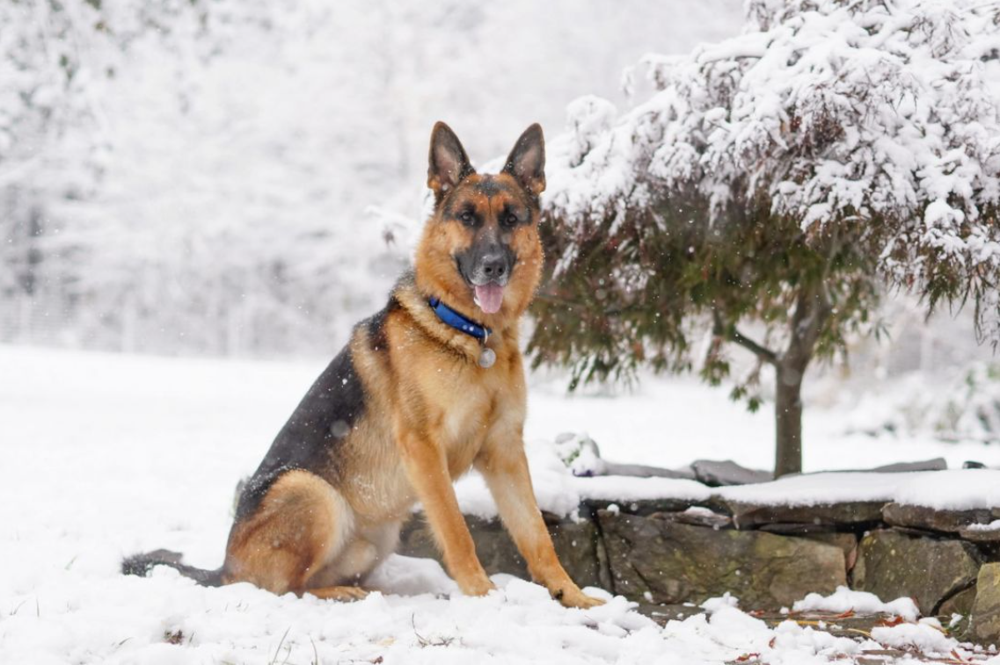
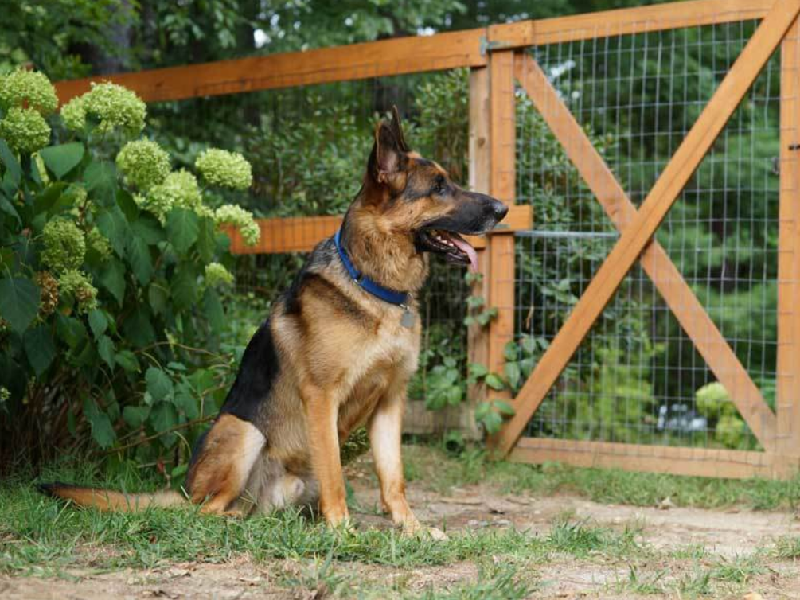

1 / 3

2 / 3

3 / 3

German Shepherd Dog · Wayland, MA
Adult · Male · Large · Black, Red / Chestnut / Orange
Koda is an active boy with lots of energy. He loves to go on any adventure, be it a walk, car ride or just playing in the fenced yard. He absolutely LOVES playing fetch and being chased by the female German Shepherd in his foster home.
Because Koda missed out on being socialized when he was a puppy, he needs a gradual introduction to new people and does best with people who know how to give him time to get comfortable. Koda has become a real cuddler, loves to be petted, and his tail starts to wag any time his foster Mom or Dad walk by him.
Koda came into GSRNE because his lack of exposure to new situations had led to his being nervous and dog-reactive. In his original home, he had run through the electric fence in his yard, grabbed a small dog being walked past the property, and his owners were told they needed to rehome him. He had lived with another dog though, so we decided to give him a chance to get comfortable with the GSD in his foster home. By taking the introduction gradually and walking the dogs together, it worked out nicely. He can still be reactive when he sees another dog while he’s out for a walk, but he’s learning to look to his person for direction. He will need continued training, patience, and lots of new experiences, to continue helping him to learn to be comfortable in most situations.
During the first weeks in his foster home, Koda would submissively urinate when he felt uncomfortable or pressured in many situations; as when attaching a leash, removing or putting on his collar, or being examined. Creating positive association, and teaching him new behaviors have helped him gain confidence and learn to trust the people in his foster home. He is learning that these things that previously made him nervous, can be positive rewarding experiences.
The ideal home for Koda will be with people who have experience with the breed, have the time, knowledge, and patience to continue working with him in the ways we’ve found to be successful. Koda would also enjoy the company of a friendly, playful female dog to play the chase games he really enjoys in the yard, and help burn off some of his energy.
More photos: https://gsrne.org/gsrne-live/our-available-dogs/

Address
P.O. Box 299, Wayland, MA 01778